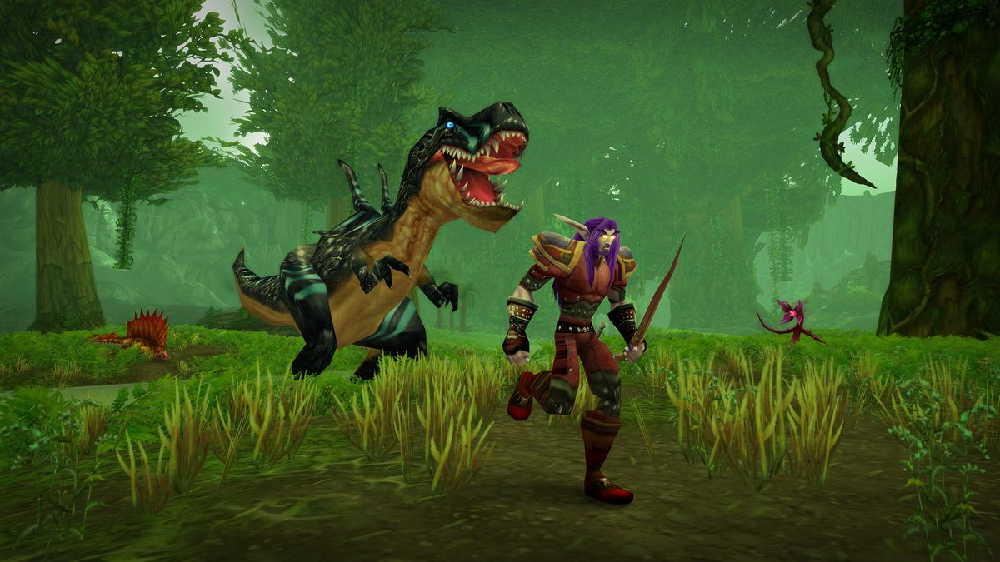
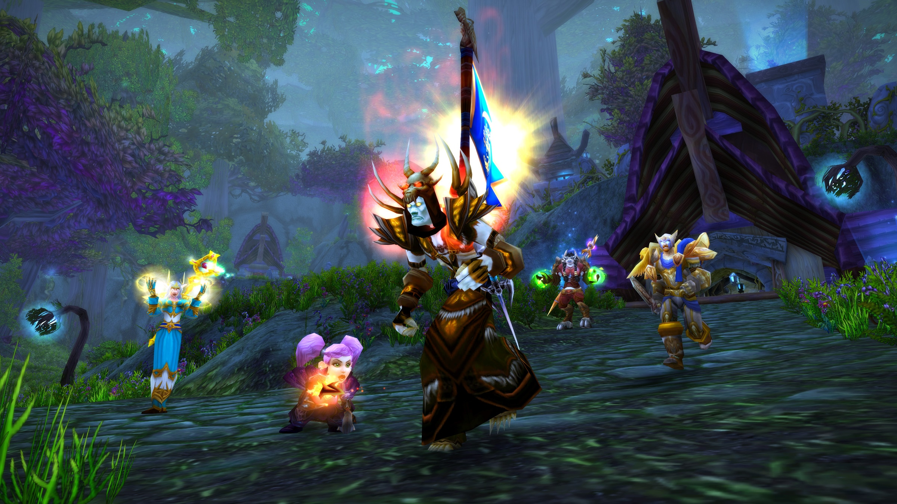
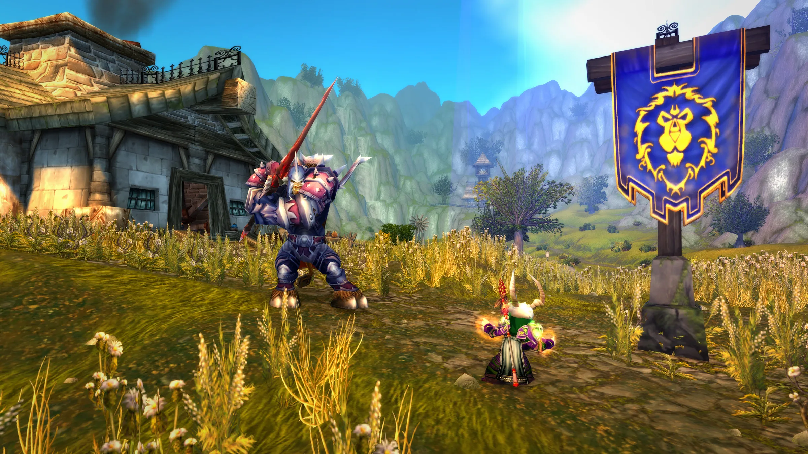
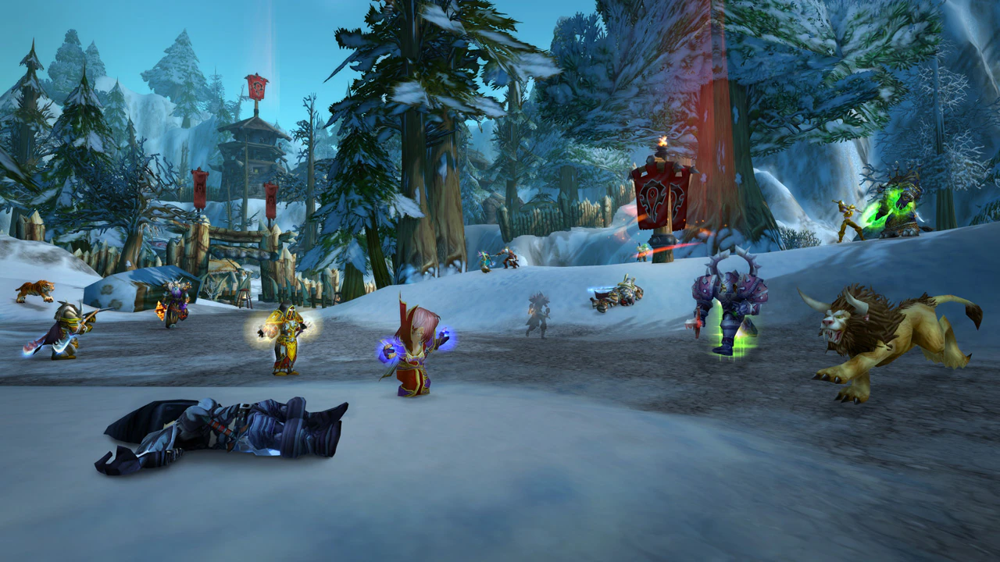

Reinos PVE
Em World of Warcraft o jogador pode escolher entre Reinos PVE e PVP. Os reinos PVE (player versus enemy) os jogadores podem escolher se estarão aptos ao combate contra outros players (PVP) de outra facção no mundo aberto. Dessa forma os jogadores decidem se querem ficar apenas fazendo o conteúdo de suas quests ou farmando sem engajar o combate com outros players, ou combater outros jogadores de facções inimigas.
Reinos PVP

Os Reinos PVP (player versus player) automaticamente sinalizam todos os jogadores para combate PVP nos territórios contestados de mundo aberto. Assim, fazer qualquer conteúdo PVE ou farmar itens no mundo aberto pode ser um desafio, sendo que a qualquer momento jogadores de outra facção podem engajar combate, até mesmo quando você estiver com a barra de vida baixa. Os reinos PVP são para jogadores que buscam desafios e se divertir combatendo jogadores da facção oposta.
PVP de mundo aberto
Após escolher o tipo de servidor que desjea jogar o jogador pode se preaparar para os desafios que virão. O PVP no mundo aberto pode ser muito divertido para aqueles que desejam assolar seus inimigos, mas bem difícil para aqueles que estão se aventurando sozinhos e encontram inimigos dispostos a te atrapalhar em sua jornada. Para isso é importante estar preparado para qualquer combate, se fortalecendo com equipes ou se munindo de itens que melhoram sua performace em PVP.
Warsong Gulch
Neste campo de batalha a Aliança defendera os defensores da floresta de Ashenvale, enquanto a Horda está do lado dos lenhadores do Barrens. Nesse campo o objetivo é capturar a bandeira inimiga que está em sua base, e não deixar o inimigo capturar sua bandeira. Vence a equipe que primeiro capturar três bandeiras.
Arathi Basin
Em Arathi Basin, a Aliança e a Horda, disputarão os recursos das planíces. Há cinco bases para serem contestadas onde serão farmados recursos, são: a fazenda, a madeireira, as minas, a forja, e os estábulos. Assim, os jogadores devem capturar as bases e defende-las, cada base providencia mais recursos a facção que a capturou. Vence a equipe que chegar as dois mil recursos primeiro.
Alterac Valley
Em Alterac Valley existe uma grande batalha entre os Orcs do clã Frostwolf e os Anões da Guarda Stormpike. Nesse imenso campo de batalha de 40 versus 40, os jogadores tem como objetivo principal matar o NPC líder da facção inimiga. Porém esse desafio não é tão simples, existem várias torres de defesas e outros NPCs que são desde soldados a generais, protegendo todos o caminho com torres e bunkers de defesa. Os jogadores recebem honra extra a cada um dos comandantes militares mortos da facção oposta e destruição das bases inimigas.
| Ranks | Aliança | Horda |
|---|---|---|
| 1 | Private | Scout |
| 2 | Corporal | Grunt |
| 3 | Sergeant | Sergeant |
| 4 | Master Sergeant | Senior Sergeant |
| 5 | Sergeant Major | First Sergeant |
| 6 | Knight | Stone Guard |
| 7 | Knight-Lieutenant | Blood Guard |
| 8 | Knight-Captain | Legionnaire |
| 9 | Knight-Champion | Centurion |
| 10 | Lieutenant Commander | Champion |
| 11 | Commander | Lieutenant General |
| 12 | Marshal | General |
| 13 | Field Marshal | Warlord |
| 14 | Grand Marshal | High Warlord |